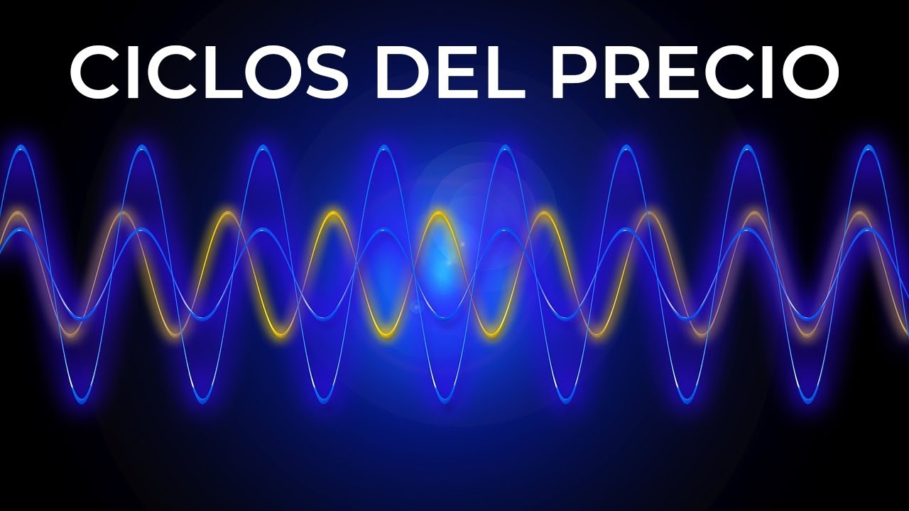
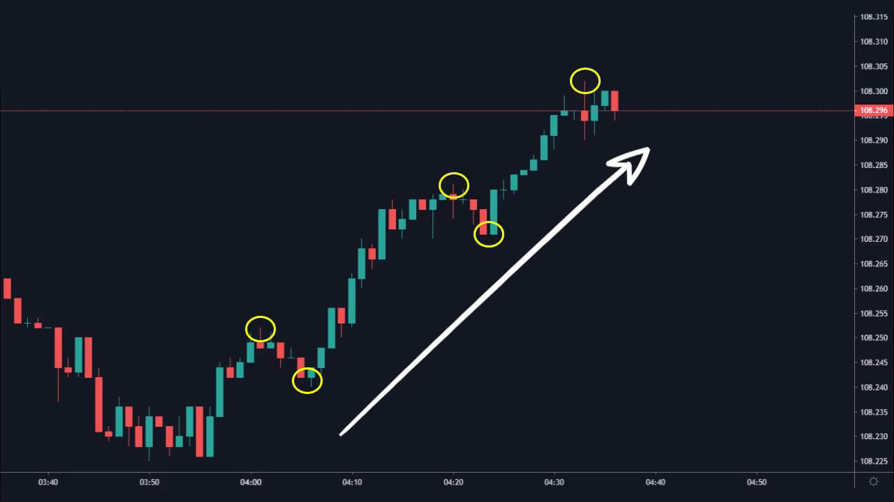
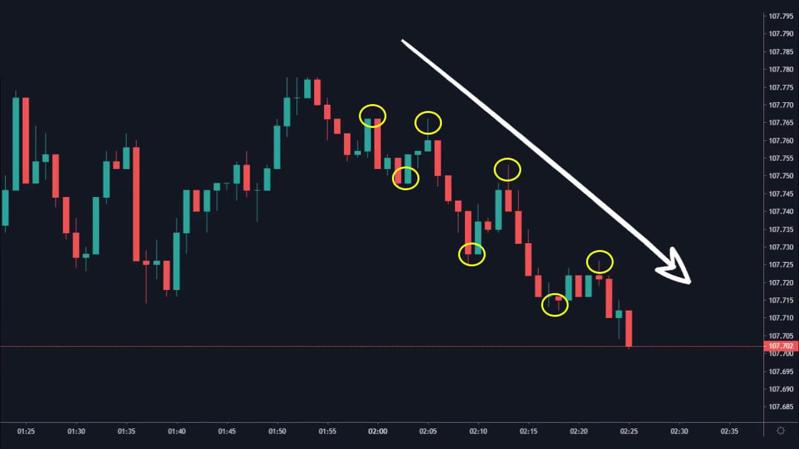
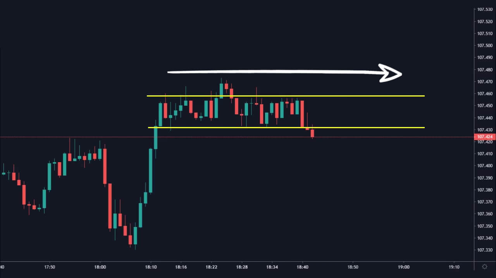
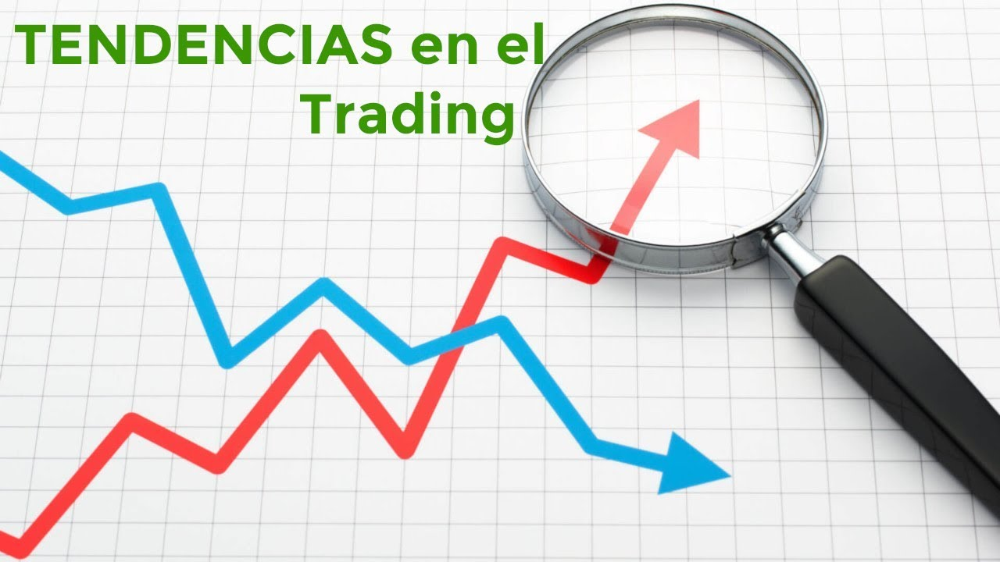
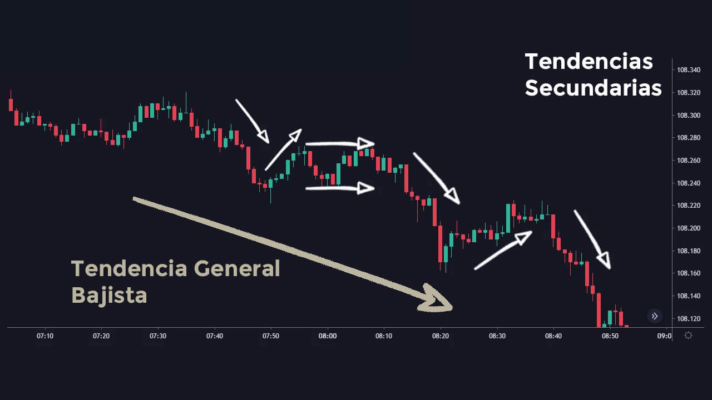

Ciclo del Mercado -Tendencias
El mercado de divisas realiza diferentes movimientos, estos movimientos se pueden catalogar en fases. Cuatro fases comunes que formal el ciclo completo del mercado.
Generalmente es difícil identificar las fases del mercado hasta que ya hayan terminado de crearse. Cuando nosotros analizamos para poder tomar una operación, leemos la historia del precio, donde estuvo antes para saber a donde podría moverse ahora. Esa historia la podemos entender mucho mejor si seguimos las fases del mercado para saber en que parte del ciclo se encuentra.
En el siguiente vídeo explico a detalle los diferentes ciclos del mercado:

Cómo podemos ver, el mercado se mueve en diferentes direcciones, estas direcciones nos muestran tendencias.
Podemos identificar las siguientes tendencias o fases:
Tendencia Alcista / Fase Alcista
Decimos que es una tendencia alcista cuando el precio a subido. En tendencias generales podemos ver que el precio se mueve creando máximos y mínimos más altos.
A medida que esta tendencia se va desarrollando, van entrando más inversores en compra, quienes continúan empujando el precio hacia arriba.
La fase que antecede a una tendencia alcista suele ser una consolidación, también conocida como acumulación.

Tendencia Bajista / Fase Bajista
Decimos que es una tendencia bajista cuando el precio a bajado. En tendencias generales podemos ver que el precio se mueve creando máximos y mínimos más bajos.
Cuando el precio empieza a mostrar sus nuevos movimientos se van uniendo inversores para tratar de seguir la corriente del precio, haciendo que el precio continúe su camino bajista.
La fase que antecede a este movimiento suele ser una consolidación, también conocida como distribución.

Consolidación / Lateralización
Decimos que es una lateralización cuando el precio se esta moviendo de manera horizontal y los máximos y mínimos los crea al mismo nivel. Dependiendo de donde se cree esta fase, puede ser conocida como acumulación (en la parte baja del gráfico, o al final de una tendencia bajista) y distribución (en la parte alta del gráfico, o al final de una tendencia alcista).

En la siguiente clase se explican las diferentes tendencias:

Es importante aprender que las tendencias se dividen en tendencias generales y tendencias secundarias.
Tendencias generales o primarias
Estas tendencias están vistas desde “lejos”, y cómo su nombre lo indica nos muestra la información general del mercado (tipo de tendencia).
Tendencia Secundaria
Las tendencias generales están compuestas de tendencias secundarias, es decir son movimientos más pequeños del precio.

Podemos complementar lo aprendido con la siguiente clase:
Te recomiendo ver el resumen de «Gráfico», encontrarás la primer actividad técnica.